Adaptive-optics simulation results
From wavefront to image
I followed the light from Shack–Hartmann spots on the detector to the corrected image of a star. These recordings show where the correction worked and where the loop lost lock.
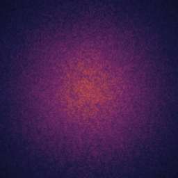
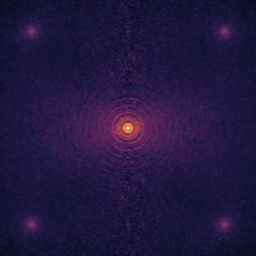
What the simulations show
- In the 2.2 m loop, reconstruction stopped at 0.981 s as spots dropped out. I increased the TSVD cutoff from 0.001 to 0.05 and replayed the same atmosphere. All 1,500 frames reconstructed over two seconds and the mirror stayed within its stroke limits.
- In the 42 m replay, four faint spots on the image diagonals came from checkerboard mirror commands that the Shack–Hartmann sensor barely detects. Filtering 96 such commands out of every update brought the corner light down to the halo level and raised the peak Strehl from 0.754 to 0.767. Three held-out atmospheres gave the same result.
- At 1.65 µm, moving the science target from the guide star to 20 arcsec away lowered the long-exposure Strehl from 0.448 to 0.338. I used the same mirror commands for both targets.
- With two frames of delay, raising the loop gain from 0.2 to 1.0 increased the ratio of corrected to uncorrected wavefront RMS from 0.723 to 1.746. At the higher gain the correction amplified the disturbance.
- Increasing the photon count from 1,000 to 100,000 per subaperture reduced the RMS error of the accepted spot positions from 0.199 to 0.0194 pixels.
- In the 8 m MCAO model, 63.5% of the on-axis H-band light fell within 50 milliarcseconds. Tomography accounted for about half of the residual variance.
Four questions from the simulation
01 · 2 m demonstrationHow does correction change the wavefront and image?Follow the atmosphere, held DM shape and residual on one recorded clock.
02 · 2.2 m investigationWhy did the loop stop correcting?Trace lost measurements and large commands, then compare stronger regularization on the same atmosphere.
03 · 42 m comparisonDoes lower gain help when correction is delayed?Compare whole-window image quality with a smaller late-run excursion.
04 · 42 m investigationWhere did the four corner spots come from?Trace the spots to weakly sensed checkerboard commands, then test a filter on four atmospheres.
Selected studies
Selected simulation results
Follow the 2 m loop, then compare the three changes I tested: rejecting weak reconstruction modes at 2.2 m, filtering checkerboard mirror commands at 42 m and lowering the controller gain at 42 m.
Follow the spot measurements through the mirror update and compare the resulting stellar images.
2.2 m · 2 s · same-atmosphere comparisonWhy did the loop stop correcting?Raising the TSVD cutoff from 0.001 to 0.05 kept the loop reconstructing for all 1,500 frames.
42 m · 1 s · four atmospheresWhere did the four corner spots come from?Removing 96 weakly sensed checkerboard commands brought the corner light down to the halo level and raised the peak Strehl from 0.754 to 0.767.
42 m · 1 s · three paired atmospheresDoes lower gain help when correction is delayed?Gain 0.3 gave the sharper mean image. Gain 0.2 reduced a late rise in the residual in one of the three atmospheres.
Methods & evidence
What is in the model?
I calculate where the lenslet spots land, use their displacements to estimate a mirror correction, and propagate the remaining wavefront to the science image.
Atmosphere and optics
Frozen-flow phase screens translate across the pupil. The 2 m demo uses one screen; the 42 m model combines ten von Kármán layers. The sensor propagates lenslet spots to a detector model. DM shapes and reconstructors differ between configurations.
Atmosphere and implementation details →Timing and image metrics
Each frame measures the residual with the mirror command already in place. For a long exposure I average intensities at fixed detector coordinates, then measure the peak. Image motion therefore affects long-exposure Strehl.
Definitions and recording conventions →Limitations
Closed-loop tests
The 2.2 m runs share one two-second atmosphere, including a slow dome layer. The traces show how weakly sensed modes amplified the commands as spots dropped out. The noise fluctuation that started the sequence remains unidentified. Only the stronger cutoff acted in the revised run; the recovery rule stayed inactive.
For the 42 m gain and delay comparisons I used three paired atmospheric realizations. Frames within each run are correlated. The late rise at three frames of delay occurred in r2. Its cause is unresolved, and the saved early and late mean PSFs are available at gain 0.2 only. The damping calculation isolates static detector noise. In the faint-star run, changing flux also changed the measurement noise and the calibration.
I chose the cutoff of the 42 m waffle filter on one atmosphere and checked it on three more. All four share the turbulence profile, guide-star flux, geometry and run length. The overview image and the 42 m replay still show the earlier reconstructor.
Telescopes and images
These are simulated telescopes. The 2.2 m pupil, mirror and camera are approximations and the model has no separate tip–tilt mirror. The 42 m geometry is the historical E-ELT design. Wind, mirror stroke, control settings and wavelength also change between the 2 m and 42 m runs. Their effect on the difference in Strehl remains coupled to aperture. The ±100 µm OPD stroke belongs to the 42 m model. Applying a published mechanical stroke to a mirror requires its travel convention and angle of incidence. Hardware calibration and segment phasing require separate measurements.
For the Hubble and Webb image examples I convolved an observed template with the simulated PSF. The template carries its own resolution and noise. The Westerlund 2 example applies one on-axis PSF across its 4.109″ field. Light from bright stars outside the crop contributes near its edges.
Numerical checks
The 2 m sensor exceeded the small-signal linearity tolerance. In the historical 42 m run the iterative solver missed its command-space criterion. The gain study uses the Fourier-reference half-light radius because the production EE50 depends on focal sampling. Numerical checks and subsequent tests
What I checked
- 2 m sensing. I applied a known tilt and compared the spot positions with the expected displacement. The response changed slightly with tilt amplitude.
- 2 m fitting. On a static tilt, the fit to sensor measurements left 68% of the original RMS. Fitting the same 13 actuators directly to the pupil wavefront left 37%.
- 42 m image width. I compared the production EE50 with a Fourier-interpolated measurement of the same image. The difference led me to use the Fourier value for the gain comparison.
Current interpretation and limits → · Numerical-check summary and evidence → · Earlier 42 m experiments →
Supporting material
NGC 1705 image replay → Replay the 42 m modelFollow a stellar image through the 42 m loop.
What changes with a fainter guide star?The fainter guide star gave a larger residual after the first second.
Compare delays at fixed gainI held gain fixed and delayed the mirror command by one, two or three frames.
Detector noise and dampingI calculated how changing the damping changes noise in the reconstructed command.
Aperture averaging and strokeCompare fluctuations across the pupil and inspect which mirror commands reached their stroke limit.
Earlier experiments and source recordsInspect the sensor response, reconstruction tests, atmosphere models and MCAO images.
Explore the loop
I used a 2 m telescope to see how the mirror correction changed the image of a star. Over the last 0.8 s, the mean wavefront RMS fell from 396 to 266 nm. At 1.65 µm, the peak Strehl of the averaged image rose from 0.185 to 0.381.
Choose a saved run
Each run changes one setting from the baseline.
Wavefronts and images
Playback slows down one second of simulated time. It uses saved frames at their original timestamps, with no interpolation.
I fitted a plane to each residual wavefront and removed it to measure how much error remained after tip and tilt were removed. The dashed curve shows that RMS. The solid curves and the science images retain tilt.
NGC 1705 through the simulated PSFs
I used an HST/WFC3 F814W image of NGC 1705 as the input. The middle and right panels show the same field after convolution with the uncorrected and corrected 1.65 µm PSFs.
Use either set of playback controls to step through the same exposures.
Image source, processing and limitations
Simple point-source comparison
I placed two point sources 334 mas apart, with the brighter one twice as bright as its companion. The two output panels show the pair through the uncorrected and corrected mean PSFs.
How the loop changes over time
The shaded region is the first 0.2 s. I used the subsequent 0.8 s for the averages.
Measurement validity and command clipping
Data table and downloads for this case
Baseline analysis-window summary
100 ms block summaries
Model, metric definitions and source records
How the frames and images are defined
Provenance of this case
Scene and observation metadata
Setup · selected 2 m case
Synthetic 2 m model · frame-by-frame SCAO simulation
- Pupil / spatial sampling
- Loading selected-case parameters…
- WFS / science wavelength
- —
- Atmosphere
- —
- Guide source / detector
- —
- Controller / command limit
- —
- Run length and analysis window
- —
Full selected-case parameters
Mirror commands are given as optical path difference (OPD). Frame definitions and settings →
After I subtracted the fitted tilt from the residual, the mean per-frame RMS fell from 266 to 190 nm. See the tilt response of the sensor and mirror →
Building the simulation
I tested the phase screens first, then compared how the loop corrected one moving layer and a ten-layer atmosphere.
Combining ten moving layers
I generated one von Kármán phase screen per layer, moved it at the specified wind speed and added its optical path difference to the on-axis pupil. The ten layer weights and winds come from the ESO design reference.
In a separate noise-free 2 m comparison, the mean residual was 293.7 nm with one layer and 325.3 nm with ten. The two atmospheric profiles used slightly different Fried lengths.
Detailed atmosphere records →Ten-layer profile used in the 42 m recording
r₀ = 0.13 m at 500 nm · L₀ = 25 m
Bar length shows normalized turbulence weight; height is labelled, not drawn to scale.
Structure-function check
I compared the phase structure function from 256 screens with the von Kármán reference at each separation.
Keeping larger runs manageable
For the 42 m pupil I propagated the lenslet spots in batches and used a sparse response matrix to reconstruct mirror commands. I accumulated the science image one intensity frame at a time.
Open the recorded 42 m experiment →- Local lenslet calculationsPropagate detector spots in bounded batches.
- Sparse response and DM operatorsRetain the local couplings used by calibration and reconstruction.
- Iterative reconstructionSolve for commands without dense global inversion.
- Streaming image accumulationAverage intensities while retaining selected full-grid PSFs for replay.
Numerical checks and limitations
Sensor response
Calibrated tilt response and centroid precision in tutorial configurations.
Sensor checks →Native and HCIPy components
I compared the two optical paths on the same 1 m pupil and reconstructor.
Backend comparison →Numerical sampling
I refined the pupil, lenslet and focal grids and compared the changes in peak Strehl and half-light radius.
Sampling records →Replay a larger AO loop
I propagated ten moving turbulent layers across the historical 42 m pupil and ran the loop at 500 Hz. Over the last 0.8 s, the mean wavefront RMS fell from 1,566 nm before correction to 187 nm after correction. At 2.2 µm the peak Strehl of the averaged image rose from 0.0023 to 0.754.
The replay shows 126 snapshots from the 500-frame run. The numerical curves include every frame. I calculated the means over frames 100–499.
I used an annular pupil based on the historical 42 m E-ELT reference design. Current 39 m ELT design →
42 m setup ↓ · A separate detector-noise calculation ↓ · Fainter guide star, 2 s ↓ · Controller delay ↓ · Integrator gain and delay ↓ · Corner spots in the mean image → · Full configuration and checks →
Wavefronts and images
- Recorded frame
- —
- Simulated time
- —
- Window analysis = frames 100–499
- —
- Residual RMS pre-update · this frame
- —
- Atmosphere RMS before correction · this frame
- —
- Peak Strehl uncorrected → corrected
- —
Same recorded frame, same scales: left PSF without correction (same atmosphere, zero DM), right with AO correction.
With a replay control selected, use the arrow keys to step, Home and End to jump, and K to play or pause.
The wavefront maps and RMS follow the selected frame. The mean-image option displays the exposure over frames 100–499.
How the loop changes over time
I plotted all 500 frames and averaged the 400 frames after the shaded startup interval.
Analysis window · 0.8 s · frames 100–499 · 400 equal weights
- Mean instantaneous atmosphere RMS
- —
- Mean instantaneous pre-update residual RMS
- —
- Peak Strehl of mean AO intensity PSF
- —
I averaged the 2.2 µm images from 0.2 to 1.0 s. Each full subaperture received 10⁵ detected electrons per 2 ms exposure.
42 m optical and control settings
Historical pupil geometry, published atmosphere inputs and assumed hardware parameters
- 42 m annular pupil · 28% obstruction
- 10 layers · r₀ 0.13 m at 500 nm
- Science PSF at 2.2 µm
- WFS: 10⁵ detected e⁻ per full subaperture per 2 ms
- Synthetic CCD · detector noise on
- One seed · 500 steps · 1 s simulated time
The guide-source flux is an input to the simulation. The photograph provides the science target.
- Sampling / WFS wavelength
- 1008² pupil samples; 84 × 84 lenslet grid; 85 × 85 DM grid; 700 nm WFS reference.
- Controller / command limit
- 500 Hz; gain 0.3; leak 0; two queued frames (4 ms); ±100 µm OPD, an assumed high-headroom bound.
- Analysis window
- Seed 1. I recorded 0–1 s and averaged frames from 0.2 s up to 1.0 s.
- Parameter sources
- 42 m historical DRM geometry and ten-layer profile; synthetic CCD, DM and photon-budget assumptions. L₀ = 25 m; all layer winds along +x.
The model uses an annular pupil and a mirror command limit of ±100 µm OPD. Compare the requested mirror commands → · Run settings and records →
Observed binary with additional simulated blur
I convolved an HST F775W image of the binary with each 2.2 µm PSF. In the uncorrected mean image the stars blend into one patch. In the corrected image I can distinguish the two peaks.
2MASS J0746425+200032 AB · HST/ACS HRC F775W · 2002-10-21. All three panels share one angular scale and one fixed brightness mapping.
HST/ACS HRC programme 9451, NASA and ESA, via MAST. Source image and preparation →
Why does the 42 m atmosphere look steadier?
The 42 m wavefront kept moving even when its RMS barely changed. I selected a fixed 2 m patch inside the large pupil and measured how its RMS varied over the same times as the 2 m baseline.
Comparing the whole-pupil RMS
I compared each whole-pupil RMS with its value 40 ms later, dividing the larger by the smaller. The largest ratio was 1.51 for the 2 m pupil and 1.009 for the 42 m pupil. At 100 ms the corresponding ratios were 2.15 and 1.021.
Both recordings last one second.
I used all 1,000 frames of the 2 m recording and all 500 frames of the 42 m recording to compare equal time intervals.
A layer moving at 10 m/s travels five 2 m pupil diameters in one second, or 0.24 of a 42 m diameter. A whole-pupil RMS therefore averages over different spatial scales.
The original displays use different scales.
The 2 m replay uses a ±1.95 µm OPD scale. The 42 m replay uses ±6.7 µm and averages each 4 × 4 group of pixels for display.
Subtracting the 42 m wavefront at 0.200 s from the one at 0.700 s gave a difference RMS of 1,851 nm, even though the individual frames had similar RMS values.
Comparing the same 2 m footprint
I placed a 2 m circle at (10, 0) m inside the clear part of the 42 m pupil. At each matched time I sampled this patch on the same 52 × 52 grid as the 2 m baseline, removed piston and kept tilt. Both maps use the same ±2,500 nm OPD colour scale.
I used bilinear interpolation to sample the 42 m wavefront on the 2 m grid.
Where is the patch in the 42 m pupil?
Watch the synchronized wavefronts and 8 ms differences
Top: separate 2 m baseline. Bottom: the 42 m patch. Left: the current wavefront. Right: its change over the next 8 ms. The same ±2500 nm scale covers every panel.
The local fluctuations are comparable
I divided the temporal standard deviation of the pupil RMS by its mean over 400 matched frames. It was 1.4% over the full 42 m pupil, 29.3% inside its 2 m patch, and 25.6% in the separate 2 m run. Averaging over the full aperture hid local changes that were clear in the patch.
| Quantity | 2 m baseline | 42 m: 2 m patch |
|---|---|---|
| Loading the recorded comparison statistics… | ||
Difference RMS is √⟨[W(t + Δt) − W(t)]²⟩ over the common pupil and every available time pair. There are 396, 350 and 150 pairs at 8, 100 and 500 ms. The figures above show one pair starting at 0.200 s, so their RMS values can differ from these whole-window statistics.
What this suggests about DM tracking and Strehl
I next compared the mirror commands with their limits. The 2 m loop reached ±1 µm OPD. The 42 m loop stayed well inside ±100 µm. Inspect the stroke measurements →
Are the 2 m and 42 m control parameters similar?
| Parameter | 2 m | 42 m |
|---|---|---|
| r₀ at 500 nm / outer scale | 0.1263 m / 25 m | 0.1300 m / 25 m |
| Pupil sample spacing | 0.0392 m | 0.0417 m |
| Nominal lenslet pitch / grid | 0.4 m / 5 × 5 | 0.5 m / 84 × 84 |
| Controller family | Leaky integrator | Same family, zero leak |
| Loop rate / gain / leak per update | 1000 Hz / 0.2 / 0.02 | 500 Hz / 0.3 / 0 |
| Queued delay / first WFS-visible effect | 2 frames = 2 ms / 3 ms | 2 frames = 4 ms / 6 ms |
| DM grid / influence model | 5 × 5 / Gaussian | 85 × 85 / linear spline |
| Symmetric DM OPD command limit | ±1 µm | ±100 µm |
| Reconstruction | TSVD | Sparse LSMR + Tikhonov |
| Detector / guide-source convention | Synthetic EMCCD / AB magnitude 7 | Synthetic CCD / 10⁵ e⁻ per full subaperture per frame |
| Science wavelength shown | 1.65 µm | 2.2 µm |
Both loops sense at 700 nm with detector noise. The two-frame queue corresponds to 2 ms in the 2 m loop and 4 ms in the 42 m loop.
Over the same 400 times, I divided each residual RMS by the corresponding input RMS. The mean ratios were 0.687 for 2 m and 0.119 for 42 m. These values describe the complete loops, including their different mirrors, sensors and controllers.
I calculated Strehl from the propagated images. A steady whole-pupil atmospheric RMS can coexist with changing local errors, so I examined the residual after the mirror correction as well.
Sampling sensitivity, definitions and downloads
The two maps have 2,032 common pupil samples. I removed piston from each frame and kept its amplitude and tilt.
With nearest-neighbour sampling, mean patch RMS changed from 381.5 to 384.1 nm, and the 8 ms difference RMS from 136.6 to 142.7 nm.
For the frozen-flow model, see Por et al. (2018), §4.1.
How much does the DM stroke limit matter?
I compared the requested mirror commands with the configured limits at each update. Over one second the 2 m loop clipped commands in 306 of 1,000 updates. All 500 updates of the 42 m loop stayed inside the limit.
Why are the limits 100× apart?
I kept the ±1 µm OPD limit of the 2 m profile. For the 42 m run I used a much wider bound, ±100 µm OPD, to let the loop move freely.
Clipping checks
An update counts as clipped when at least one requested actuator command exceeds its limit. I compared the commands the mirror received with the wavefront and Strehl in the next exposure.
| Quantity | 2 m | 42 m |
|---|---|---|
| Loading the saved saturation statistics… | ||
The largest requested command over the full second was 1.128 µm in the 2 m run and 6.918 µm in the 42 m run. The table uses the interval from 0.2 to 1.0 s.
Between 0.200 and 0.518 s the 2 m mirror held commands within its limits, yet Strehl ranged from 0.380 to 0.722. The image continued to vary during that interval even without clipping.
Aligning commands with exposures
In the 2 m analysis window, 174 updates clipped and 173 exposures held a clipped command. The last update has no following exposure in the recording.
For the 42 m run I also counted the demands above two reference levels. Across all actuators and update times, 46.73% exceeded 1 µm and none exceeded 10 µm. Both counts use the original command history.
What does real ELT M4 hardware tell us?
ESO describes M4 in its 2022 paper on ELT coordination and control (pp. 1–2). The table compares the published quantities with the assumptions in the historical 42 m model.
| Parameter | ELT / M4 in the ESO paper | 42 m recording |
|---|---|---|
| Telescope primary aperture | 39 m | 42 m historical geometry |
| M4 degrees of freedom / model command channels | 5352 degrees of freedom | 5873 recorded channels on an 85 × 85 layout; 5328 are nonzero in this record |
| On-sky / simulated loop rate | Up to 1 kHz | 500 Hz |
| Stroke | 100 µm actuator stroke, as stated in the paper | Explicit symmetric command bound: ±100 µm OPD |
| Stroke management | Slowly accumulating modes are offloaded to other telescope mirrors and axes | A single modeled DM with command clipping |
The paper quotes 100 µm of actuator stroke. To compare that number with an OPD command limit, consider a mirror with 100 µm total mechanical travel, centred on its operating point and illuminated at normal incidence.
100 µm mechanical total travel → ±50 µm mirror displacement → ±100 µm OPD.
For a surface displacement h and angle of incidence θ, reflection changes the optical path by 2h cos θ. The conversion above illustrates those conventions. The published stroke alone does not specify M4’s usable symmetric OPD range.
Methods, source records and downloads
For the distinction between limited stroke and controller state, see Nagashima, Kim and Agrawal, actuator limitations and anti-windup. For controlled finite-stroke comparisons in a different ELT AO architecture, see Basden et al. (2013), §§2.3 and 3.3. Those studies supply physical and controller context for the stroke discussion.
Why the 2.2 m loop lost lock
In my 2.2 m natural-guide-star simulation, the first run stopped reconstructing the wavefront at 0.981 s. I raised the relative cutoff in the truncated singular-value decomposition (TSVD) from 0.001 to 0.05 and ran the same two seconds of atmosphere again.
The revised loop reconstructed all 1,500 frames. Every mirror command stayed within its stroke limit. From 0.2 to 2.0 s, the mean instantaneous H-band Strehl rose from 0.381 to 0.750.
The results load when this section comes into view.
2.2 m telescope, sensor and controller settings
I used the published Robo-AO-2 geometry to set the telescope and lenslet array in the model.
- Hardware targets / model sampling
- 2.2 m aperture, 16 × 16 lenslets and 17 actuators across the pupil. The model samples the pupil on a 256 × 256 grid and retains 197 actuator channels.
- Atmosphere / guide source
- 11 atmospheric layers including slow dome seeing, r₀ = 0.113 m at 500 nm and L₀ = 25 m. The guide source has AB magnitude 7 and flat fν.
- Wavelengths / sensing
- The wavefront sensor measures noisy spots at 750 nm. I calculate the science PSFs at 1.65 µm.
- Controller / command limit
- 750 Hz, gain 0.4, zero leak and two frames of delay (2.667 ms). I set the mirror command limits to ±3.5 µm optical path difference.
- Change between the paired runs
- I increased the TSVD cutoff and added command decay after consecutive rejected frames.
- Run length and analysis window
- Both runs use the same atmosphere and calibration. Each has 1,500 frames over 2 s. I excluded the first 0.2 s when calculating the Strehl statistics.
All 131 parameter notes → · Inspect the control diagnosis → · Westerlund 2 F162M image experiment →
Replay the original and revised runs
The left panel shows the atmospheric wavefront. The middle and right panels show the residuals with the original and revised reconstructors. Switch to the point-source or star-field view to see the effect of each residual on the image.
Saved replay loads when this panel is visible.
Shared input
Original · v1
Revised · v2
All three maps use the same OPD scale. I removed piston for display and retained tilt. Dark pixels are outside the pupil.
Westerlund 2 through the recorded PSFs
I selected a 4.109″ field in a JWST/NIRCam F162M image of Westerlund 2 and convolved it with each of the three 1.65 µm PSFs. The stars and brightness scale are the same in every panel. The opening view shows the last frame, when the original and revised point-source Strehl values were 0.104 and 0.715.
MP4 download loads with this replay.
Fixed reference
No correction
Original · v1
Revised · v2
Compare the two frames around the first rejection. They are just 1.33 ms apart. The larger difference in stellar concentration develops later as the original mirror holds its last shape.
Source: NASA/ESA/CSA JWST NIRCam, program 3523 · EWOCS, calibrated public MAST product. Data policy. Modified by resampling, PSF convolution and a shared display stretch.
Locate the selected field and inspect the source
The white box marks the field in the outer part of the Westerlund 2 observation. Cyan marks saturated pixels in the surrounding 30″. The adjacent panel shows the native cutout.
Download the animation and inspect the JWST cutout
Source: jw03523-o005_t001_nircam_f150w2-f162m_i2d.fits · SCI in MJy/sr · pipeline 3.0.0 · CRDS jwst_1584.pmap. F150W2 is the blocking filter; the transmitted band is F162M. Its 1.627 µm pivot differs from the model by about 1.4%; its 0.168 µm bandwidth is approximated by one existing monochromatic PSF.
I averaged pixels by area, then convolved the surrounding field with each 768 × 768 unit-flux PSF. This preserves the angular scale and tilt. I used the same asinh stretch for every image. The linear samples are available below.
The ideal reference convolves the observed JWST field with the unaberrated 2.2 m pupil PSF. I filled missing pixels outside the selected field with the nearest valid sample. Image assumptions and limitations
Filter definitions · JWST PSFs and resampling · JWST data-quality flags.
Replay sampling, PSF derivation and downloads
I propagated each saved OPD map through the binary pupil using a centred Fourier transform and threefold padding, then normalised each PSF to unit flux.
The wavefront maps show all 256 × 256 pupil samples. The display enlarges the centre of each PSF. I measured Strehl on the full PSF.
Strehl, mirror commands and reconstruction by time window
The baseline covers one second. The longer window compares only the two 2.2 m runs.
| Recorded configuration | Frames | Mean Strehl | Temporal SD | CV | Frames with new clipping | Frames with DM at boundary | Unusable reconstruction |
|---|
SD measures the variation of instantaneous Strehl across frames. CV is SD divided by the mean. I included rejected frames in both statistics.
A command clips when it requests more than the available stroke. An actuator can then stay at the limit for many frames. The table counts frames with at least one affected actuator. The plot gives the fraction of actuators in each frame.
Tracing the loss of lock
- Spot measurements drop out. Some spots first fell below the peak signal-to-noise threshold. As the residual grew, more centroids became uncertain or their spots extended beyond the measurement window.
- The remaining rows constrain the mirror less well. After dropping the rejected rows, the reconstructor still kept modes with small singular values. Inverting those values turned small spot errors into large changes in the requested mirror shape.
- I checked the large increment at frame 732. Its norm over all actuator channels was 45.82 µm OPD. Applying the 0.05 cutoff to that frame reduced the norm to 5.74 µm. The weak modes accounted for 98.4% of its squared norm.
- The loop stops updating the mirror. At frame 736, only 278 of 374 measurement rows remained. This fell below the 75% required for reconstruction. The last queued commands passed through the controller at frame 737. From exposure 738, eight actuators stayed at their stroke limits.
I tested whether the held mirror shape was keeping spots out of their windows. At three times after rejection, I kept the atmospheric wavefront fixed and set the mirror flat. All 374 measurement rows became usable again at each of those times.
Follow the measurement and control signals
The plots include every control frame. If the selected control frame has no stored image, the replay pauses and the displayed image keeps its own timestamp.
Follow the drop in valid rows, then compare the requested command increments with the actuators actually held at the limit. Orange shows the original run and green the revision.
Saved control telemetry loads when this panel is visible.
| Signal | Original v1 | Revised v2 |
|---|
Frame timing, definitions and downloadable telemetry
The PSF at exposure k uses the mirror command from update k−1. Frame 0 starts with a flat mirror. The table above also reports boundary occupancy after each update.
In the CSV a rejected increment has a missing value and appears as a gap on the plot. The new-clipping column refers to the command requested at that frame.
What changed when I raised the cutoff?
| Setting | Original draft · v1 | Revision · v2 | Basis for the setting |
|---|---|---|---|
| TSVD relative cutoff | 0.001 | 0.05 | With all measurement rows present, both cutoffs retain all 197 modes. With rows missing, the revised cutoff rejects weak modes that the original inverse kept. |
| Consecutive-rejection recovery | None | After 3 rejected frames, decay requested commands by 5% on each further rejected frame | The queue drains before the command starts to decay. |
| Physical model and normal controller | 2.2 m; ±3.5 µm OPD; gain 0.4; zero leak; two queued frames; 750 Hz; same atmosphere, optics and camera settings | Both runs used these settings. | |
In the original run, the reconstructor rejected the last 764 frames. In the revised run, all 1,500 frames reconstructed and the recovery rule never activated. The higher cutoff kept reconstruction usable throughout this trajectory.
The published NGS model uses regularised zonal least squares. I used a truncated SVD so I could vary the smallest retained singular value of the response matrix. SVD calibration method.
How far does the guide-star correction extend?
I kept the guide star and its mirror correction fixed and moved the science target to 5, 10 and 20 arcsec from the guide star. The light from the off-axis targets crossed the high atmospheric layers at different positions. On the same 1.8 s exposure at 1.65 µm, the Linux run gave peak Strehl values of 0.444 on axis, 0.433 at 5 arcsec, 0.396 at 10 arcsec and 0.337 at 20 arcsec.

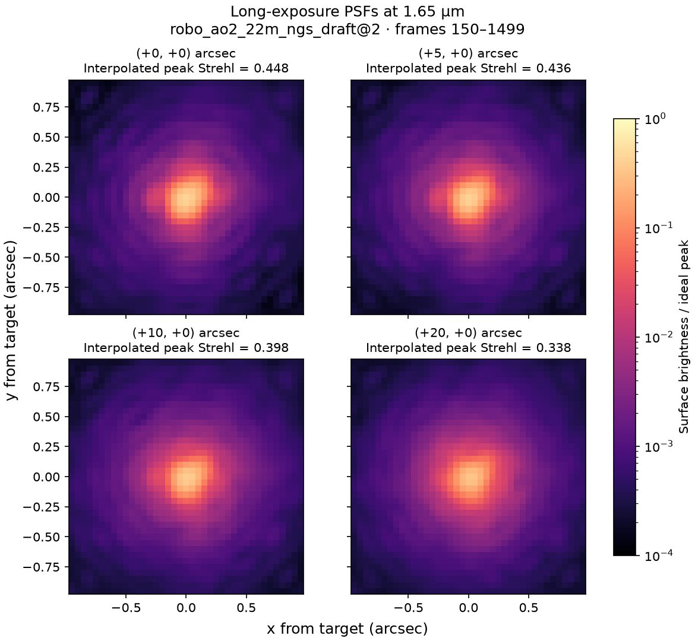

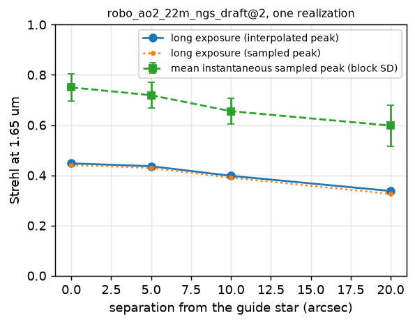
Telescope, sensor and controller parameters
The table lists the parameter sources used to build the 2.2 m model. The configuration files below give the values used in each run.
I used the UH telescope diameter and the 16 × 16 natural-guide-star lenslet layout. I represented the BMC DM492-3.5 with 197 actuator centres across the pupil. The symmetric ±3.5 µm OPD limit assumes normal incidence and operation about the midpoint of travel.
| Field | Original 2 m | 2.2 m draft | Classification / sources | Notes and limitations |
|---|
Data, run history and downloads
The 2 m run provides a separate reference. It uses a different atmosphere, aperture, detector sampling and controller.
During export, negative background-subtracted signal-to-noise values were recorded as zero. The sensor used signed values to reject measurements. Replaying the first 745 frames reproduced the original trajectory. The final stroke check was corrected in postprocessing.
The downloads include the two configurations, per-frame measurements, diagnostic calculations and the comparison figure.
Earlier experiments
I tested the sensor and reconstructor separately, then measured how their errors appeared in the corrected image. Each study below includes its figures and measurements.
42 m run · configuration, checks and reproducibility
Profile det_ccd_42m_r3band_derived@1; 1008² pupil samples; 84 × 84 lenslet grid; 85 × 85 DM grid; seed 1; 500 Hz simulated loop rate; gain 0.3; leak 0; two queued latency frames; ±100 µm OPD command limit. Declared WFS flux: 10⁵ detected electrons per full subaperture per 2 ms frame. The synthetic CCD preset supplies the detector assumptions. Zero saturation refers to the configured ±100 µm OPD command bound. All ten frozen-flow layers move along +x at their specified speeds; layer heights are not used for tomography.
500 full-precision atmosphere/residual map pairs, 126 full-grid PSF pairs, all frame metrics and 400-frame intensity means are retained locally. Mean intensities are accumulated without recentering; the wavefront is never averaged before propagation.
Historical 42 m DRM geometry · Current 39 m ELT
Configuration:
42 m illustration · scientific source and image preparation
NASA/ESA Hubble Space Telescope, ACS/HRC program 9451; MAST/STScI calibrated product j6kt02020_drz.fits, F775W, 440 s total exposure, 0.025″ pixels. All four input exposures have no saturation flags in the inspected 31 × 31 pixel region around the binary.
I subtracted a background estimated in an outer annulus, took a 161 × 161 pixel cutout, and resampled by pixel-area overlap. I kept signed pixel values and normalized the HST template once.
I used linear convolution and kept the original HST resolution, noise and image orientation. Negative flux values are clipped only in the display.
Full methods, observable definitions and open questions
Model families on this site
- Native time-domain SCAO (the 2 m experiment, R1–R5 and the large-aperture convergence studies of R8): a frame-by-frame closed loop with a Shack-Hartmann sensor, a deformable mirror, a TSVD or sparse reconstructor and a leaky-integrator controller with queued delay. Detector-level profiles add a detector model (photon, read and sky noise, calibration products).
- HCIPy time-domain components (R7): an optical backend compared with the native one on a small test configuration; both loops use the same dense reconstructor.
- Analytical MCAO adapter (R6 and the analytical-study checks of R8): P3 sampled correction-band PSD plus a continuous fitting-tail completion propagated by MASTSEL. It supplies analytical sensitivity results alongside the native time-domain studies.
Wavelengths, residual conventions, noise settings, profiles, sampling windows and budgets differ between these families and between studies; each study retains its own definitions.
The 2 m experiment
Observable definitions
- Residual RMS: pupil RMS of the pre-update residual (what the WFS measured) after removing the pupil mean, in nm OPD. Mean per-frame RMS and the root of the mean square are reported separately.
- Residual RMS after tip/tilt removal: for each frame, a plane a + b x + c y is fitted by equal-weight least squares over the illuminated pupil samples to the same pre-update residual map, in the pupil's own coordinates; the diagnostic is the RMS of the residual minus that plane, in nm OPD (float64, pupil exterior excluded). It is computed from the saved maps after the run and changes no image. The atmosphere RMS and the total residual RMS keep their tilt.
- Peak Strehl: peak angular surface brightness of an image over that of the zero-OPD image of the same propagator and grid. The mean of instantaneous Strehl and the Strehl of the averaged image are different quantities and are labelled as such.
- Averaged image: the equal-weight mean of every instantaneous intensity in the analysis window: frames 200–999 (800 frames) in the 2 m replay, and frames 100–499 (400 frames) in the 42 m replay. The window start was declared before analysis. Intensities are averaged with tilt retained and fixed image coordinates.
- Validity: measured fractions of valid measurement rows and sub-apertures, and whether the reconstructor returned an estimate. The reconstruction gate and row fractions are reported separately.
How to read the result labels
Questions recorded with the sampling studies
Reproducibility and identity
Local preview
The site is static and needs an HTTP server; opening index.html from the file system is not supported. From the repository root run python3 -m http.server 8000 --directory site and open http://localhost:8000/. All assets are bundled; the page makes no external requests. Source links in the appendix open the corresponding GitHub files at their recorded commits.
The page's code lives in a directory named after its content (code-<build>/) and the dataset entry records that build, so a browser cannot combine a cached older script with newer data: a page whose code does not match the entry says so and asks for a reload.
How the 42 m experiments fit together
The one-second replay shows the stellar and binary images. I used different runs to test flux, delay and gain. The static damping test gave a 0.0042 nm predicted reduction in detector noise, so I kept α = 0.001 for the later runs.
Earlier trials and solver checks are documented in the numerical notes. The Limitations section explains the image-width and solver criteria used here.
Source code and reference repositories
Shack-Hartmann AO Simulation — this project's Python package, bundled configurations and usage examples. The 2 m, 2.2 m and 42 m time-domain recordings use the project's native implementation.
- HCIPy — optional optical backend and independent component comparison; see the R7 study.
- TIPTOP — upstream ecosystem for the separate analytical AO performance study in the appendix.
- P3 — sampled correction-band phase PSD used by that analytical adapter.
- MASTSEL — PSD-to-PSF propagation used by that analytical adapter.
The analytical adapter combines P3 with a local fitting-tail completion and MASTSEL propagation. Each study lists its software versions, source revisions, scientific references and applicable scope.
How much detector noise does stronger damping remove?
I increased the reconstructor damping from α = 0.001 to 0.0025. At each setting I propagated the detector-noise covariance through the same linear model to estimate its contribution to pupil wavefront RMS. The guide-star flux was 100,000 detected electrons per full subaperture per frame.
The predicted noise RMS fell from — to —. The reduction was 0.0042 nm, well below the 1 nm threshold I had set for a closed-loop test. I kept α = 0.001.
Noise calculation and downloads
| Quantity | Replay setting α 0.001 | Alternative α 0.0025 |
|---|
Historical 42 m model · guide-star flux
How does a fainter guide star change the residual?
I reduced the flux from 100,000 to 1,000 detected electrons per fully illuminated subaperture per frame and repeated the same two-second atmosphere (r2). I kept gain, delay and damping fixed and recalibrated the sensor and reconstructor at each flux.
Hover over a chart, or focus the slider and use the arrow keys, to read the recorded values of one frame. Times are frame index ÷ 500 Hz.
| Quantity | Bright · 100,000 e⁻ | Faint · 1,000 e⁻ | Faint − bright |
|---|
Both loops reconstructed every frame and stayed within the mirror limits. Over 0.2–2.0 s, the peak Strehl of the mean image was 0.753 for the bright guide star and 0.730 for the faint one.
Run settings and downloads
I used det_ccd_42m_r3band_derived@1 at 500 Hz with gain 0.3, zero leak, a two-frame queue, damping α = 0.001 and detector noise on. I measured image quality at 2.2 µm.
I averaged the per-frame residual RMS over frames 100–499 and 500–999. The loop ran continuously across frame 500. The combined window covers all 900 frames after startup.
Changing flux affects detector noise, the measured sensor response, and the reconstruction matrix calibrated from that response. The bright and faint runs have the same open-loop RMS frame by frame.
The first 500 frames of each trajectory reproduce the earlier one-second run. The bright case also supplies the two-frame baseline in the delay study.
The faint run completed on its third attempt. The first stopped during setup and the second was interrupted by a computer restart. The table uses the completed trajectory.
| Window | Bright | Faint | Faint − bright |
|---|
| Run and frames | Peak Strehl | Fourier-reference EE50 | Production EE50 (secondary) |
|---|
For images I used two exposures, 0.2–1.0 s and 0.2–2.0 s. I measured the peak Strehl and integrated the light in the mean PSF to find the half-light radius.
Historical 42 m model · controller delay
What changes when the mirror correction arrives one frame later?
I held the integrator gain at 0.3 and changed the command queue from one frame to two and then three. I ran each setting through the same three atmospheres for one second at 500 Hz. The loop applies a command from frame k at k + L, and the sensor first sees its effect at k + L + 1.
Hover over a chart, or focus the slider and use the arrow keys. Times are frame index ÷ 500 Hz.
Paired change against delay 2
| Metric, frames 100–499 | 1 − 2 | r0 / r1 / r2 | 3 − 2 | r0 / r1 / r2 |
|---|
Image quality
| Delay | Mean residual RMS | r0 / r1 / r2 (nm) | Peak Strehl of the mean image | r0 / r1 / r2 | Fourier EE50 (λ/D) | r0 / r1 / r2 |
|---|
The half-light radius increased with delay in all three atmospheres. Averaged across them, it grew from 0.803 to 0.834 and then 0.971 λ/D.
Mean PSFs of all nine records (static figure from the analysis)
Each row is one atmosphere and each column one delay. The nine 2.2 µm images use the same logarithmic scale relative to the ideal peak and show ±20 λ/D.
The figure is checked when this section is opened.
Run settings, definitions and downloads
Each frame lasts 2 ms. The queue length L is the number of frames between reconstruction and command release.
I used det_ccd_42m_r3band_derived@1 with 100,000 detected electrons per full subaperture per frame, detector noise on, gain 0.3, leak zero and damping α = 0.001. Root seed 1 generated the three atmosphere realizations.
I used the three delay-2 records from the photon-budget study and made six runs at delays 1 and 3. A computer restart interrupted the first delay-3 run in r2. The table uses its completed repeat. The r2 delay-2 record also supplies the first second of the bright guide-star flux run.
For each record I averaged the residual RMS over frames 100–499, then subtracted the delay-2 result for the same atmosphere. I used the three paired differences to calculate the 95% Student t interval (two degrees of freedom).
| Delay | Residual RMS (nm) | Peak Strehl | Fourier EE50 (λ/D) | Production EE50 (secondary) |
|---|
| Run | Delay | Atmosphere | Origin | Mean RMS (nm) | Root mean square of the frame RMS (nm, reference only) | Frames with valid fraction < 0.995 |
|---|
I averaged the intensity images over the same 400 frames. Peak Strehl is the peak of this mean image divided by the ideal peak. Fourier disc integration gives the half-light radius. The table also lists the radius obtained by summing sampled pixels.
Historical 42 m model · closed-loop gain and delay
How does loop gain affect a delayed correction?
I lowered the integrator gain from 0.3 to 0.2 and repeated the same three atmospheres at queue delays of two and three frames. At two frames, the mean peak Strehl at 2.2 µm fell from 0.751 to 0.692. At three frames it fell from 0.720 to 0.672. Gain 0.3 gave the sharper long exposure at both delays.
Each run lasted one second at 500 Hz. I excluded the first 0.2 s while the loop settled, then averaged the next 400 images before measuring their peak relative to the ideal PSF. The plots below show the result for each atmosphere and the mean of the three.
Gain–delay records load when this panel is opened.
Image quality over the 0.8 s exposure
All twelve numeric records ↓ · Inspect the late-run contrast ↓
Paired contrasts
G gives the change when I lower the gain from 0.3 to 0.2 at fixed delay. D gives the change when I add one frame of delay at fixed gain. I compares these delay effects, D(0.2) − D(0.3). Each point comes from one atmosphere. The bands show 95% Student t intervals across the three paired differences.
Paired contrast values
| Contrast | r0 | r1 | r2 | Mean | 95% interval | Zero |
|---|
Adding one frame of delay cost 0.0313 in Strehl at gain 0.3 and 0.0196 at gain 0.2. The difference was 0.0117 (95% paired interval 0.0097–0.0136). The intervals for the corresponding changes in residual RMS and half-light radius span zero.
All twelve records · whole-window numeric values
| Gain | Queue delay (frames) | Realization | Origin | Mean residual (nm) | Peak Strehl | Fourier EE50 (λ/D) |
|---|
What happened late in the third atmosphere?
In atmosphere r2 at three frames of delay, I compared the mean residual over 0.2–0.6 s with the mean over 0.6–1.0 s. It rose by 40.7 nm at gain 0.3 and by 3.7 nm at gain 0.2. The fraction of accepted measurements fell below 99.5% in 137 frames at the higher gain and eight at the lower gain. Over the full r2 exposure, gain 0.3 gave a peak Strehl of 0.722, compared with 0.674 at gain 0.2.
Teal shows gain 0.3 and orange shows gain 0.2. The vertical line at 0.6 s separates the two averaging windows.
Early and late numeric values
| Gain | Early [100,300) | Late [300,500) | Final block [400,500) | Final 50 [450,500) | Late − early | Valid < 0.995 | Minimum validity |
|---|
Windowed Strehl summaries · new runs only
| Frame window | Peak Strehl | Samples |
|---|
The gain-0.2 table gives the peak of each window’s separately averaged PSF. At gain 0.3 the available image integrates the full 0.8 s.
Run settings and downloads
I used a guide-star flux of 100,000 detected electrons per full subaperture per frame, detector noise on, leak zero and damping α = 0.001. Within each atmosphere, all four gain and delay settings saw the same incoming wavefront. Root seed 1 generated atmospheres r0–r2.
I took the arithmetic mean of the per-frame residual RMS before each correction. For image quality I measured the peak Strehl and the half-light radius of the mean PSF at 2.2 µm. The radius comes from Fourier integration over a disc.
I used the six gain-0.3 recordings from the delay study and made six runs at gain 0.2. The first attempt at delay 3 in r2 was interrupted. The comparison uses the completed repeat with the same configuration.
Historical 42 m model · reconstruction artefact
Where did the four corner spots come from?
The AO-corrected mean image of my 42 m replay showed four faint spots on the diagonals, 0.454″ from the core along each axis. I traced them to checkerboard patterns on the deformable mirror that the Shack–Hartmann sensor barely detects. Version 2 of the 42 m profile removes a family of 96 such patterns from every reconstructed mirror update and changes nothing else.
On the same atmosphere, the light in the corner windows fell from 10.8 to 0.91 times the surrounding halo. The peak Strehl of the mean image rose from 0.754 to 0.767 at 2.2 µm. Three further atmospheres, judged by criteria I fixed before running them, gave the same result.
42 m settings and the one change between the runs
- Telescope and sensor
- Historical 42 m annular pupil. 84 × 84 Shack–Hartmann lenslets in the Fried geometry, with the actuators at the lenslet corners. 85 × 85 actuator grid at 0.5 m pitch.
- Controller and reconstructor
- 500 Hz, gain 0.3, leak 0 and two frames of delay. The reconstructor solves damped least squares with LSMR, damping α = 0.001.
- The change
det_ccd_42m_r3band_derived@2projects 96 weakly sensed checkerboard modes out of every reconstructed increment, with cutoff 0.35 of the RMS column norm of the response. Every other setting matches@1.- Runs and analysis window
- Seed 1 is the published replay, rerun on the same atmosphere. Seeds 104–106 are held out. Each run has 500 frames, and I averaged the 2.2 µm images over 0.2–1.0 s.
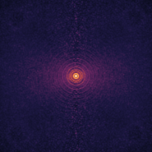
Mean AO-corrected images of the same atmosphere, frames 100–499 at 2.2 µm. Both use the overview's 1.20″ field and log scale, 10⁻⁶–1 of the ideal peak. Dashed circles mark (±λ/2d, ±λ/2d), 0.454″ from the core along each axis for the 0.5 m actuator pitch. The left image is the one on the overview.
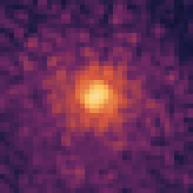
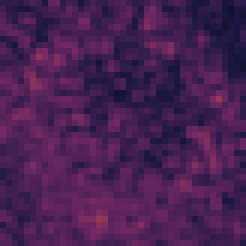
±0.108″ (±20 detector pixels) around the corner position, six screen pixels per detector pixel, log scale 10⁻⁶–10⁻³ of the ideal peak. The 13 × 13 pixel window used for the ratios covers the central third.
| Quantity | Version 1 | Version 2 |
|---|---|---|
| Corner / halo | 10.84 | 0.91 |
| Edge midpoint / halo | 1.99 | 1.99 |
| Peak Strehl of the mean PSF | 0.7535 | 0.7670 |
| Encircled energy within 2 λ/D | 0.664 | 0.675 |
| Mean residual RMS | 186.7 nm | 180.7 nm |
| Checkerboard in the mirror commands, RMS per actuator | 49.9 nm | 2.5 nm |
| Slope rows dropped per frame | 4.4 | 1.3 |
| Unusable frames · saturated actuators | 0 · 0 | 0 · 0 |
Halo windows at the same radius away from the diagonals held the same light in both runs. The windows at the edge midpoints, (±λ/2d, 0) and (0, ±λ/2d), stayed at about twice the halo, so the excess belonged to the diagonals alone.
Tracing the spots
- The spots sit where a checkerboard sends its light. A mirror pattern that alternates sign from each actuator to the next along both axes diffracts light to (±λ/2d, ±λ/2d). For d = 0.5 m at 2.2 µm, that is 0.454″ on each axis, exactly where the spots appeared. Makidon et al. describe the same lattice of PSF copies in AEOS images.
- The sensor hardly sees that checkerboard. In the Fried geometry each lenslet measures the slopes set by the four actuators at its corners. The combination x₀₀ − x₁₀ − x₀₁ + x₁₁ produces no slope at all. A checkerboard across the mirror registers only where the pupil edges cut the lenslets. Its least sensed form, tapered toward the edges, responds at 2.2% of the typical actuator response. Tip and tilt respond at 2.7%.
- The damping was too weak to hold it back. With α = 0.001, damping changes the reconstructed amplitude of that mode by 0.2%. The solve amplifies it about 45 times more than a mode of median response, and the integrator, with no leak, keeps what it receives. Over 0.2–1.0 s the mirror commands carried 49.9 nm RMS of checkerboard per actuator.
- It is a family, not one mode. Multiplying any smooth command by the checkerboard gives a twin that a complete lenslet sees with the same slope energy. Every smooth correction the loop applies therefore has a checkerboard twin of nearly equal response. Twins with slowly varying envelopes send their light to points within a few λ/D of the corners.
I did not isolate what drives the family. Measurement noise and aliased high-order turbulence, fitted with large amplitudes in nearly blind directions, are the likely sources.
What I tried, in order
Three runs replayed the published atmosphere in full. One design ran as a 120-frame check. The others ran as 150-frame prototypes on the same seed, with the image averaged over frames 50–149. In that shorter window version 1 gives a corner / halo ratio of 9.50 and a peak Strehl of 0.758.
| Design | Test | Corner / halo | Peak Strehl | What happened |
|---|---|---|---|---|
| Penalty row on the uniform checkerboard | Full replay | 11.7* | 0.7455* | The global checkerboard in the commands fell 13-fold, but the loop moved the pattern onto weakly sensed edge actuators. Commands reached the stroke limit and the residual climbed to 646 nm.* |
| Penalty row on the least sensed mode | 120-frame check | – | – | Once the validity gate dropped slope rows, the penalized direction stopped being a mode of that frame's solve. The largest command reached 77 µm and the residual 241 nm by frame 100. |
| Exact projection of that mode after each solve | Full replay | 8.22 | 0.7569 | Commands stayed small, but the spots turned into faint rings. Checkerboards under smooth envelopes, left in place, still carried light around the corners. |
| Remove the mostly checkerboard response eigenvectors | Prototypes, cutoff 0.15 · 0.25 | 15.3 · 16.9 | 0.716 · 0.696 | Worse than no filter. The eigenvectors mix smooth modes with their twins, so removing them also removed useful correction. |
| Stronger damping, α = 0.1 | Prototype | 4.82 | 0.696 | Damping acts on response, not on shape, so tip, tilt and other smooth modes were damped as hard. |
| Local-waffle penalty on every lenslet cell | Prototype | 1.22 | 0.768 | Close to the halo, at the cost of 5,112 extra rows in every solve. |
| Split twins, then select one at a time | Prototype, cutoff 0.35 | 1.04 | 0.769 | Stopped just above the halo. |
| Split twins, then select within the twin subspace | Prototypes, cutoff 0.30 · 0.35 · 0.40 | 1.01 · 0.96 · 0.94 | 0.768–0.770 | Reached the halo. 0.35 is the smallest tested cutoff below it. |
| Version 2: the last design at cutoff 0.35 | Full replay | 0.91 | 0.7670 | The corners sit at the halo level. |
* From the written record. The run files were deleted after they were measured.
The way through was to separate each checkerboard twin from its smooth partner before choosing what to remove. Inside a band of weakly sensed response modes, the local-waffle form splits each pair into a nearly pure checkerboard and a nearly smooth mode. The filter keeps the smooth modes and removes the least sensed part of the checkerboard subspace, 96 modes at cutoff 0.35. Tip, tilt and defocus each overlap that family by less than 5 × 10⁻⁴.
I kept the projection rather than the per-cell penalty because it reached the halo level at the tested settings and leaves the least-squares solve unchanged.
Does it hold on other atmospheres?
I chose the cutoff on seed 1. To test whether it only suited that one atmosphere, I ran both versions on three seeds that no earlier 42 m run had used: 104, 105 and 106. Before the first run I wrote down the settings and five pass criteria for each seed:
- Version 1 shows the spots, with corner / halo above 3.
- Version 2 has corner / halo at most 1.5.
- The version-2 peak Strehl is no more than 0.005 below version 1.
- The version-2 edge-midpoint ratio is within 10% of version 1.
- Neither run has an unusable frame or a saturated actuator.
Every random stream comes from the seed, including the simulated detector calibration. Each seed therefore also built its own 96-mode family.
| Quantity | Seed 104 | Seed 105 | Seed 106 | Seed 1 (tuning) |
|---|---|---|---|---|
| Corner / halo | 10.15 → 0.92 | 12.76 → 0.98 | 9.42 → 0.88 | 10.84 → 0.91 |
| Peak Strehl of the mean PSF | 0.7525 → 0.7652 | 0.7492 → 0.7657 | 0.7525 → 0.7647 | 0.7535 → 0.7670 |
| Mean residual RMS (nm) | 187.5 → 181.9 | 189.4 → 181.3 | 187.5 → 181.7 | 186.7 → 180.7 |
| Edge midpoint / halo | 1.64 → 1.65 | 1.87 → 1.87 | 2.23 → 2.24 | 1.99 → 1.99 |
| Criteria met | 5 of 5 | 5 of 5 | 5 of 5 | 5 of 5 |
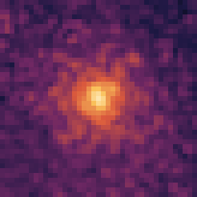
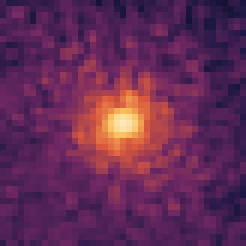
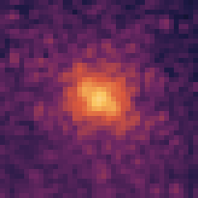
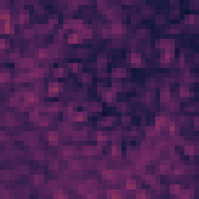
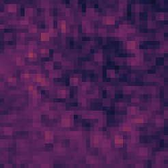
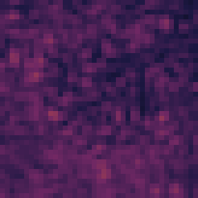
Upper-right corner of each held-out seed, on the zoom scale above.
All three seeds met all five criteria. Version 1 showed the spots in every seed, at 9.4 to 12.8 times the halo, and version 2 brought them to 0.88–0.98. The edge-midpoint ratios differ from seed to seed but changed by less than 0.5% within each seed, so the filter put no new light there.
Limits, sources and downloads
Each evaluation covers 0.8 s of a 1 s run. I chose the cutoff on frames 50–149 of seed 1, which overlap that seed's evaluation window. The held-out seeds avoid that overlap but share its turbulence profile, guide-star flux, geometry and run length. Other turbulence, fluxes and longer runs are untested.
The family is computed once per run from the fully valid calibration. A direction that becomes weakly sensed only when a frame drops slope rows is not in it. The cutoff of 0.35, the band factor of 1.5 and the threshold of 0.5 are my choices for this geometry, not published values. The filter exists only for the sparse LSMR reconstructor. The overview image and the 42 m replay still show version 1.
Makidon et al. (2005) show that a Fried-geometry Shack–Hartmann sensor does not sense waffle, and that waffle error copies the PSF onto a square lattice at odd multiples of λ/2d. Gavel (2003) shows that Tikhonov regularization leaves the mode space unchanged, that a penalty on the global waffle mode alone leaves local waffle free, and that almost every singular mode carries some local waffle. The twin split is my own way of separating those modes; neither paper gives a cutoff for this system.
Filter source code · Design decisions · Model limitations
Notes (README.md)Values (data.json)Per-frame residuals (frames.csv)Input hashes (provenance.json)Exporter (exporter.py)